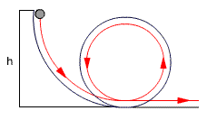

|
|
Se separa un péndulo
de su posición de equilibrio hasta que el hilo queda horizontal
y entonces se suelta. Calcula
la tensión del hilo cuando éste forma un ángulo
φ con la horizontal |
|
 |
Se deja resbalar la bola
por el carril sin rozamiento. Determina el mínimo valor de
h para que la bola recorra el rizo, de radio R, sin problemas |
|
|
Desde el punto A se suelta
una bolita para que deslice por la su-perficie esférica de
radio R. Suponiendo despreciable el rozamien-to calcula el valor
del ángulo φ cuando la bolita se separe de la superficie |
|
Una pelota de masa m gira en un plano vertical
unida a una cuerda de longitud L. Suponiendo cons-tante su energía
mecánica calcula la diferencia entre las tensiones de la cuerda
en el punto más bajo y alto de la trayectoria |
|
Desde el punto A se
suelta una bolita para que deslice por la super-ficie esférica
de radio R. Suponiendo despreciable el rozamiento cal-cula la reacción
normal de la superficie cuando la bolita esté en B |
|